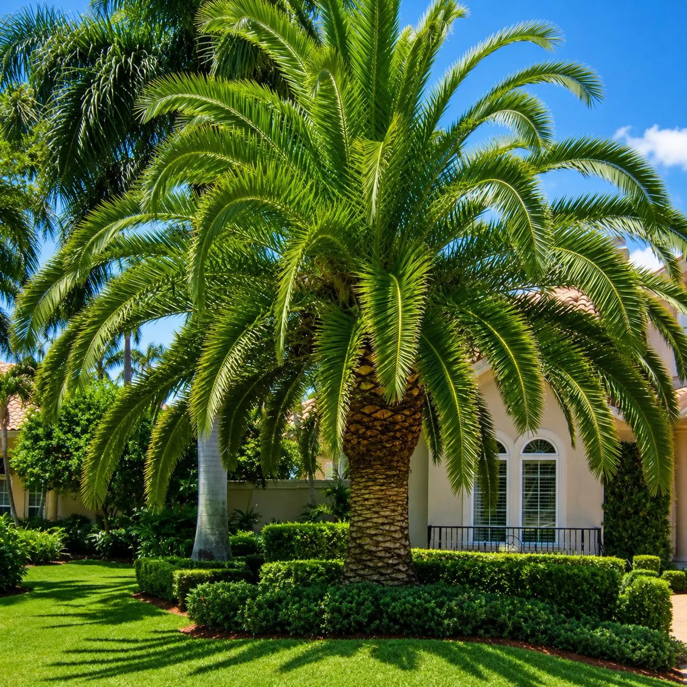
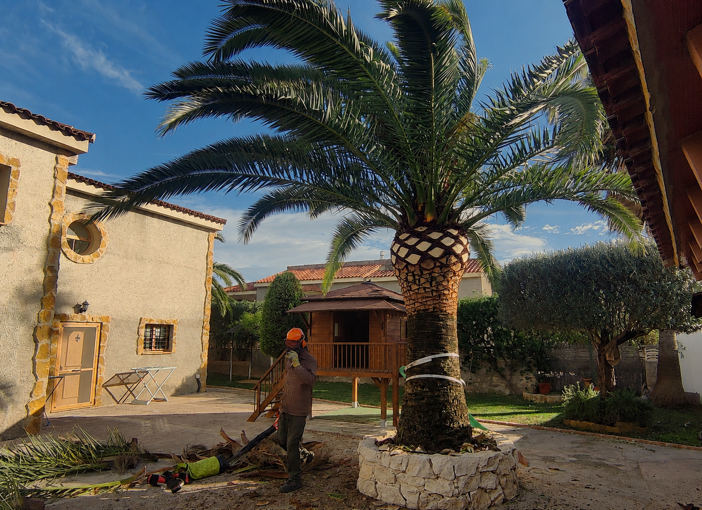

Soluciones profesionales para la gestión y mantenimiento
arbolado - palmeras - áreas verdes
Más de 25 años mejorando el patrimonio verde del Mediterráneo.
Expertos en el cuidado de árboles, palmeras y jardines
Técnicas tradicionales + innovación
Aplicamos criterios de arboricultura moderna y tradicional para garantizar la seguridad y salud en árboles y palmeras.
Compromiso con el medio ambiente
Utilizamos productos respetuosos y técnicas sostenibles en cada intervención.
Más de 25 años de experiencia
Respaldados por cientos de clientes satisfechos en Valencia y alrededores.

Nuestros Servicios
Conservamos y ponemos en valor el patrimonio vegetal de cada espacio.

Poda de palmeras
Expertos en la gestión y mantenimiento de palmeras Phoenix dactylifera, Phoenix canariensis, Washingtonia y Syagrus. Aplicamos técnicas especializadas de poda, saneamiento y conservación.
Ver servicio →
Poda de árboles
Realizamos podas de formación, mantenimiento, saneamiento y reducción de copa en árboles ornamentales, mediante técnicas de arboricultura moderna, priorizando la seguridad y la salud del árbol.
Ver servicio →
Tratamientos fitosanitarios
Control de plagas (cochinilla, pulgón, picudo) con productos ecológicos. Diagnóstico y soluciones efectivas.
Ver servicio →
Endoterapia vegetal
Tratamiento interno para palmeras. Combate el picudo rojo desde el interior. Seguro y respetuoso con el entorno.
Ver servicio →
Adecuación áreas verdes
Acondicionamiento de parques, jardines y rotondas. Limpieza, desbroce, nivelación y diseño sostenible.
Ver servicio →
✨ A medida
Consultoría & Servicios a medida
¿Tienes un proyecto especial o no encuentras lo que buscas? Te ofrecemos soluciones personalizadas adaptadas a tus necesidades específicas.
Confían en nosotros
Empresas e instituciones que han depositado su confianza en nuestro trabajo.


Transformaciones reales
Descubre cómo hemos transformado espacios verdes en Valencia. Desliza el control para ver el antes y después de cada proyecto.


Cifras que hablan por sí solas
+12 años de experiencia cuidando el patrimonio verde de Valencia
Palmeras podadas
+ de 1000 clientes confían en nosotrosAños de experiencia
Desde 2012 cuidando tu jardínClientes satisfechos
Valoración media de 4.9/5Lo que dicen nuestros clientes
Valoraciones de clientes reales que confían en nuestro trabajo.
La poda de las palmeras de mi urbanización quedó impecable. Muy profesionales y puntuales.
Aplicaron endoterapia a mis palmeras datileras y solucionaron el picudo. Increíble resultado.
Realizaron la adecuación de todo el jardín comunitario. Quedó espectacular, muy recomendables.
Nuestro trabajo en imágenes
Proyectos reales que reflejan nuestra calidad y compromiso con cada espacio verde.


Preguntas frecuentes
Encuentra respuestas a las preguntas más comunes sobre nuestros servicios.
Lo recomendable es realizar una poda anual, preferiblemente en primavera o principios de verano. Durante la poda, se eliminan hojas secas, racimos de frutos y cualquier brote enfermo o dañado, asegurando que la palmera mantenga una forma saludable y equilibrada.
También revisamos el tronco y la base del árbol para detectar plagas o daños, aplicando tratamientos preventivos si es necesario. Una poda adecuada mejora la estética, seguridad y longevidad de la palmera.
La endoterapia es un tratamiento que inyecta productos fitosanitarios directamente en el sistema vascular de la palmera, combatiendo eficazmente plagas como el picudo rojo.
Este método es seguro y respetuoso con el medio ambiente, minimizando la exposición a químicos y fortaleciendo la resistencia natural de la palmera.
Sí, ofrecemos nuestros servicios en toda la provincia de Valencia, incluyendo la ciudad y municipios cercanos como Moncada, Godella, Burjassot, Paterna y Torrent.
Nos desplazamos con rapidez y profesionalidad, adaptándonos a proyectos tanto privados como comunitarios.
Sí, realizamos presupuestos gratuitos y personalizados. Incluimos una visita técnica para evaluar necesidades específicas y posibles problemas.
Después entregamos un presupuesto detallado, explicando cada procedimiento y producto que se aplicará, asegurando transparencia y confianza con nuestros clientes.